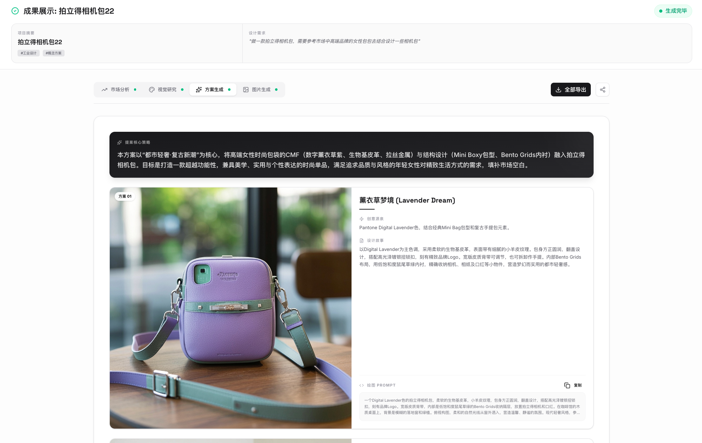
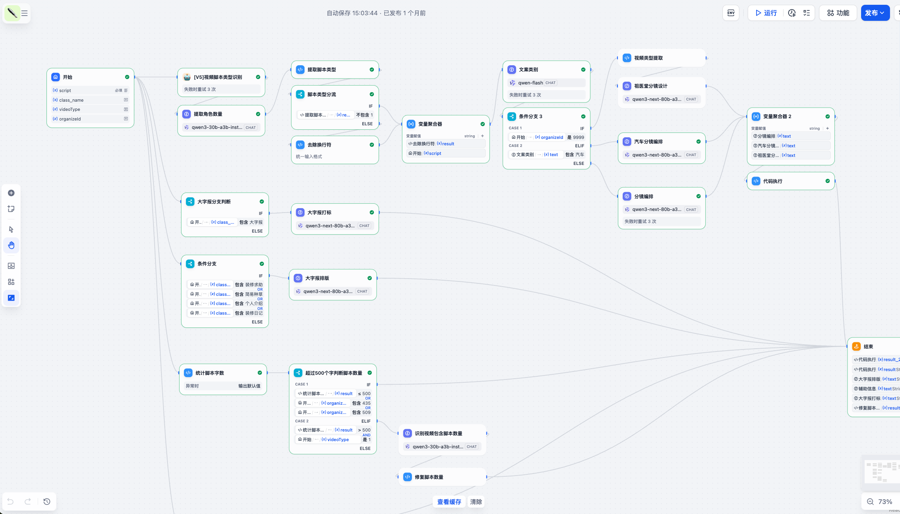

从“会用AI”到“用AI创造经营结果”
本方案不是工具采购建议，而是一套可执行、可审计、可进化的数字员工经营系统。目标是在90天内跑通高价值场景，形成可复制的增长与管理闭环。
执行摘要：这次项目要解决什么
问题
企业已买工具、做培训，但经营结果改善不稳定。
方案
引入“数字员工系统”，实现任务自动执行与协同。
路径
诊断→试点→扩展→运营，先小范围跑通再复制。
结果
效率提升、响应提速、流程可审计、能力可沉淀。
企业AI化现状：做了很多，但难形成经营闭环
知识库 / RAG
解决“能不能找到资料”，但不负责“是否执行到结果”。
Workflow编排
适合固定流程，遇到跨系统、异常场景时脆弱。
轻量私有化部署
成本可控，但能力边界受限，难覆盖复杂业务动作。
SaaS Copilot
常停留在“辅助写作”，仍高度依赖人工驱动。
结论：真正缺的是“组织化执行能力”，而非再增加一个聊天入口。
真实痛点画像（管理层视角）
核心判断：企业要重构的是“AI生产关系”
企业AI化不是“人 + 工具”的线性升级，而是人 + 数字员工 + 流程 + 知识 + 治理的系统重构。先跑通体系的企业，会形成持续复利。
效率复利
同类任务自动化比例持续上升，边际成本下降。
知识复利
经验沉淀为Skill，新项目可直接复用。
管理复利
可审计、可追责、可持续优化。
数字员工定义：不是聊天机器人，而是执行系统
数字员工应具备的4个能力
- 主动执行：可接收长期目标并持续推进
- 跨系统动作：浏览器/API/文档/脚本协同
- 记忆与学习：保留组织经验并持续优化
- 可治理：权限边界、日志留痕、人工兜底

与传统AI工具的关键差异（6维对比）
驱动模式
传统：被动问答 ｜ 本方案：主动执行任务
执行边界
传统：受限于API ｜ 本方案：可跨系统完成动作
使用门槛
传统：IT配置重 ｜ 本方案：业务可直接派单
能力沉淀
传统：靠个人Prompt ｜ 本方案：Skill组织化复用
治理能力
传统：难审计 ｜ 本方案：规则校验+日志追踪
进化机制
传统：会话技巧 ｜ 本方案：复盘驱动持续优化
技术架构（PlantUML逻辑落地）

五层结构
- 业务入口层：飞书/企微/网页任务入口
- 任务编排层：路由、规则、审批、调度
- 执行层：多Agent协同（执行/分析/质检）
- 工具层：浏览器/API/文档/数据库/脚本
- 治理层：权限、审计、告警、人工接管
强调点：可执行、可扩展、可管控
场景地图：先做能快速见效的4类业务
内容增长
热点追踪→选题→生成→分发→复盘
运营提效
会议纪要、周报、日报、任务提醒自动化
销售支持
线索整理、客户画像、跟进建议与脚本
管理协同
跨部门事项追踪、风险预警、经验沉淀
演示场景A：汇报自动化（低门槛快见效）
聊天窗口下发“生成周报”
从群聊/文档/表格取数
自动生成结构化汇报
规则校对、口径一致
发送至指定群与负责人
目标
减少重复汇总工作
预期
汇报制作耗时下降30%-60%
价值
管理节奏更稳定，口径更统一
演示场景B：内容增长自动化（增长闭环）
流程闭环
- 热点监测
- 选题评分
- 多平台内容生成
- 自动发布
- 数据回收与复盘
管理指标
- 周产能（篇数/素材数）
- 触达与互动率
- 线索转化率
- A/B版本胜率
从“写一条内容”升级为“经营一个持续增长系统”。
演示场景C：组织记忆与知识资产化
传统状态
- 经验散落在聊天记录与个人电脑
- 新人上手慢、离职即断层
- 相同问题反复问、反复做
数字员工状态
- 规范、模板、历史决策结构化沉淀
- Skill直接复用到新场景
- 业务问答与执行基于同一知识底座
三阶段落地路径
识别高价值场景，跑通2-3个可量化闭环
跨部门复制，形成标准技能库与模板库
在治理体系下增强决策辅助能力
项目交付与验收机制
交付物
- 场景优先级清单
- 数字员工工作流配置
- 首批Skill能力包
- 操作SOP与培训材料
- 管理看板与审计日志
验收指标
- 自动化率
- 时效提升
- 准确率与返工率
- 跨部门复用率
- 管理满意度
原则：每个试点必须可量化、可复盘、可扩展。
风险控制与治理边界
权限控制
按岗位配置最小权限，关键动作需人工确认。
过程审计
关键链路全量留痕，可追踪可回放。
异常兜底
规则拦截 + 人工接管 + 回滚机制。
目标：在效率提升的同时，不牺牲安全与合规。
核心团队（创业落地导向）
黄楚皓｜产品经理
负责场景设计、业务转化与交付管理，确保方案贴近经营目标。
王子渊｜技术经理
负责架构设计、Agent编排、稳定性与扩展能力建设。
谢馥荫｜培训经理
负责组织培训、行为转化与管理协同机制落地。
咨询顾问｜高校导师
提供方法论与人才培养支持，提升项目长期可持续性。
报价框架（正式报价前口径）
启动包
诊断 + 试点场景 + 首批上线
适合快速起盘
进阶包
多场景复制 + 多部门协同
适合规模化提效
战略包
经营看板 + 持续运营优化
适合长期数字化转型
可按场景数量、部门范围、服务周期做组合报价。
结语：现在启动，先跑出一个结果
不是“要不要做AI”，而是“先在哪个场景拿到第一个确定性结果”。建议本周启动业务诊断会，7天出试点方案，30天交付首批可见成果。
Step 1
2小时业务诊断会
Step 2
7天输出试点方案与指标
Step 3
30天完成首批场景上线